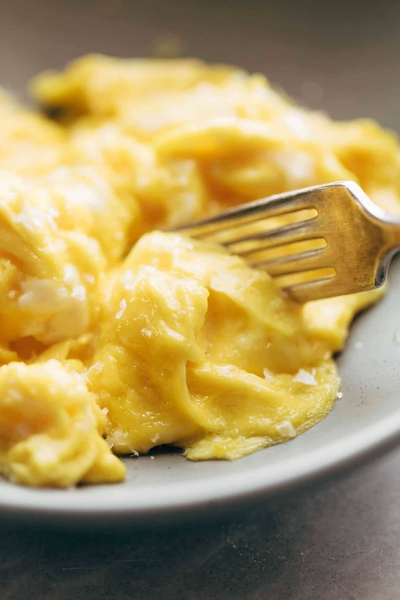

Scrambled Eggs

Description
These soft scrambled eggs are incredibly fast, simple, and delicious. Feel free to add some of your favorite hot sauce when eating!
Ingredients
- Two to four eggs
- 1/2 tablespoon unsalted butter
- Salt to taste
- Your favorite hot sauce (or ketchup!)
Directions
- Melt the butter in a medium-sized non-stick skillet over medium-low heat, cover the whole pan
- Whisk the eggs, when the butter is just barely bubbling, add the eggs to the pan directly in the center
- Watch for the edges to just barely start to set, and then gently swipe a spatula around the edges of the pan to create large soft curds
- Continue this until eggs start to form larger curds, do not flip the curds over, should take around 2-3 minutes
- When the eggs are barely set and you have some big folds of eggs, remove from heat
- Eat plainly, or serve on toast or a bagel, don't forget the hot sauce or ketchup
- Enjoy!